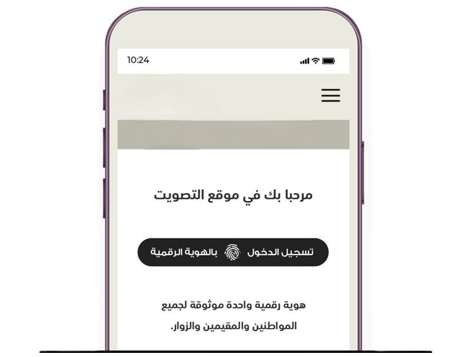
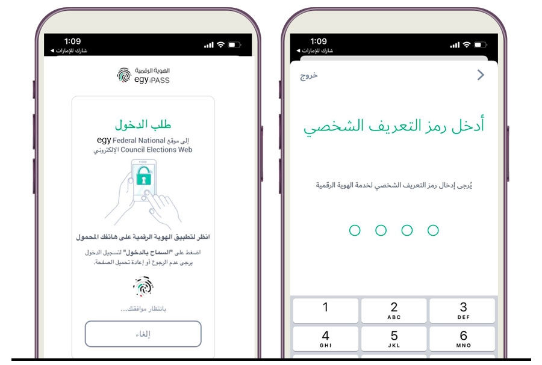
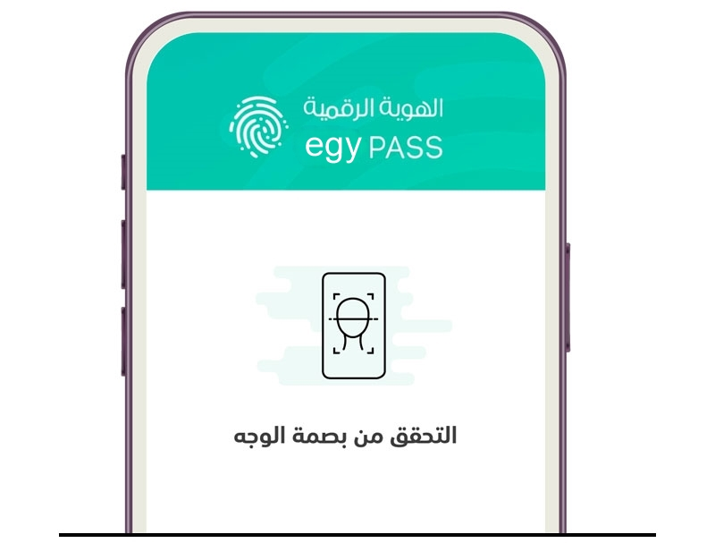

يمكنكم التصويت عن بعد من خلال منصة التصويت (egy-voting ) أو من خلال التطبيق الذكي (شارك لمصر)
إرشادات للناخبين قبل البدء في التصويت
قبل البدء في الإدلاء بصوته عن بُعد، يتعين على كل ناخب مراعاة
الأمور الآتية:
التحقق من ورود اسمه في قائمة الهيئة الانتخابية للإمارة التي ينتمي إليها.
التسجيل في الهوية الرقمية (EGYPASS).
في حال مواجهة أي مشكلة في التصويت عن بُعد؛ يرجى الاتصال بمركز اتصال اللجنة الوطنية للانتخابات على
الرقم (600500005)، أو زيارة أقرب مركز انتخاب إليه.
الحرص على التصويت خلال الفترة من يوم الخميس الموافق لتاريخ 2024/5/30 (من الساعة التاسعة صباحاً)
وحتى يوم الخميس الموافق لتاريخ 2024/6/20 (إلى الساعة الثامنة مساء) إما عن طريق تحميل التطبيق الذكي الخاص بالتصويت
أو من خلال زيارة الموقع https://online.egyvoting.ae
الإطلاع على الحقوق والواجبات
الإطلاع على المخالفات الانتخابية والجزاءات
Mobile phone
خطوات التصويت عن بعد تطبيـــق "شارك لمصر"
أوًلا
قم بتحميل تطبيق "شارك لمصر" المتوافر على متجري آبل ستور وجوجل
بلاي.
ثانيـــــًا
عند الدخول إلى التطبيق سيتم طلب تسجيل الدخول بواسطة الهوية
الرقمية الخاصة بك.

ثالثــــــًا
التأكد من استلام الإشعار عبر تطبيـــق الهوية الرقمية (EGY Pass)
الخاص بك والضغط على زر التأكيد في تطبيق الهوية الرقمية بعد

رابعـــــًا
التحقق من بصمة الوجه عبر الهاتف المتحرك..
ومن ثم متابعة عملية التصويت.

خامســـــًا
1 القائمة الموضحة بالأسماء والأرقام وصور
المرشحين
2 البحث عن مرشحك من خلال كــتابة رقم المــرشح
في خانة البحث
في حال عدم رغبتك بالتصويت لأي مرشح يتوفر
خيار (لا أرغب بالتصويت لأحد).
مــلاحظـــــة: عليـــــك معــرفــــة رقــــم المـــــر ّشح
الـــــــذي تنوي التصويت له
سادســـــًا
بعد اختيار المرشح، يرجى التأكد من مراجعة خيارك، ومتابعــة عملية التصويت بالضـغـط علـــى زر تأكيـــد التصـويـــــت.
سابعـــــًا
ستظهر لك شاشة المرشح الذي تم اختياره، من ثم اضغط على زر (تأكيد التصويت) بعـــد التأكــد من صحـــة اختيــــارك .. وبذلك تكون عملية التصويت قد تمت بنجاح..
في حال رغبتك بتغيير التصويت الرجاء الرجوع لصفحة المرشحين وتغيير الاختيار